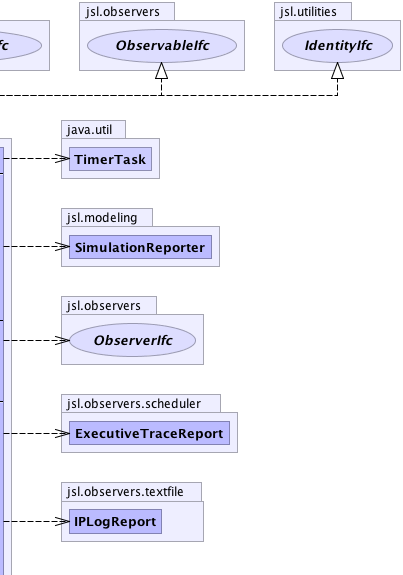

jsl.modeling.Simulation
jsl.modeling.Simulation
|
||||||||||
| PREV CLASS NEXT CLASS | FRAMES NO FRAMES | |||||||||
| SUMMARY: NESTED | FIELD | CONSTR | METHOD | DETAIL: FIELD | CONSTR | METHOD | |||||||||
java.lang.Object
public class Simulation
Simulation represents a model and experiment that can be run. It encapsulates a model to which model elements can be attached. It allows an experiment and its run parameters to be specified. Finally, it allows reporting of results to files via a SimulationReporter
|  | ||
| Nested Class Summary | |
|---|---|
protected class |
Simulation.ReplicationExecutionProcess
This class implements the IterativeProcess behavior for the Simulation |
| Field Summary | |
|---|---|
private BatchingElement |
myBatchingElement
Used to control statistical batching |
protected Executive |
myExecutive
The executive for running events |
protected Experiment |
myExperiment
The experiment for running the simulation |
private int |
myId
The id of this object |
private static int |
myIdCounter_
A counter to count the number of objects created to assign "unique" ids |
protected Model |
myModel
The model to simulate |
private java.lang.String |
myName
The name of this object |
private boolean |
myRepLengthWarningMsgOption
A flag to control whether or not a warning is issues if the user does not set the replication run length |
protected Simulation.ReplicationExecutionProcess |
myReplicationExecutionProcess
Controls the execution of replications |
| Constructor Summary | |
|---|---|
Simulation()
Creates a simulation with name, "Simulation" to run an empty model with default experimental parameters using the default scheduling executive |
|
Simulation(java.lang.String simName)
Creates a simulation to run the model according to the experimental parameters using the default scheduling executive |
|
Simulation(java.lang.String simName,
java.lang.String expName)
Creates a simulation to run the model according to the experimental parameters using the default scheduling executive |
|
Simulation(java.lang.String simName,
java.lang.String modelName,
java.lang.String expName)
Creates a simulation to run the model according to the experimental parameters using the default scheduling executive |
|
Simulation(java.lang.String simName,
java.lang.String modelName,
java.lang.String expName,
Executive executive)
Creates a simulation to run a model according to the experimental parameters using the supplied scheduling executive |
|
| Method Summary | |
|---|---|
void |
addObserver(ObserverIfc observer)
Allows an observer to be added to the simulation. |
protected void |
afterExperiment()
This method is automatically called at the end of the experiment Sub-classes can inject behavior within here |
protected void |
afterReplication()
This method is automatically called after each replication Sub-classes can inject behavior within here |
boolean |
allStepsCompleted()
Checks if the simulation completed all of its replications |
protected void |
beforeExperiment()
This method is automatically called at the start of the experiment Sub-classes can inject behavior within here |
protected void |
beforeReplication()
This method is automatically called before each replication Sub-classes can inject behavior within here |
boolean |
contains(ObserverIfc observer)
Returns true if the observer is already attached |
int |
countObservers()
Indicated how many observers are attached |
void |
deleteObserver(ObserverIfc observer)
Simulation implements ObservableIfc. |
void |
deleteObservers()
Simulation implements ObservableIfc. |
void |
end()
Causes the simulation to end after the current replication is completed |
void |
end(java.lang.String msg)
Causes the simulation to end after the current replication is completed |
boolean |
executionTimeExceeded()
Checks if the simulation stopped because of real clock time |
boolean |
getAdvanceNextSubStreamOption()
Returns how many times the random number streams will be advanced before the simulation starts. |
boolean |
getAntitheticOption()
Indicates whether or not the antithetic streams have been turn on or off |
BatchingElement |
getBatchingElement()
A BatchingElement is used to control statistical batching for single replication simulations. |
long |
getBeginExecutionTime()
The absolute time in milliseconds that the simulation was started |
int |
getCurrentReplicationNumber()
Returns the current number of replications completed |
ExecutiveTraceReport |
getDefaultExecutiveTraceReport()
Gets a reference to the default event tracing report. |
long |
getElapsedExecutionTime()
The time in milliseconds between when the simulation was started and the simulation ended |
long |
getEndExecutionTime()
The absolute time in milliseconds that the simulation ended |
Executive |
getExecutive()
The Executive associated with the simulation |
Experiment |
getExperiment()
The Experiment associated with the simulation |
boolean |
getGarbageCollectAfterRepilicationFlag()
Returns whether or not System.gc() is called after each replication |
long |
getId()
Returns the id for this object |
double |
getLengthOfReplication()
Provides the length of each replication |
double |
getLengthOfWarmUp()
Provides the length of the warm up period for each replication |
IPLogReport |
getLogReport()
Gets the IPLogReport that was attached to the simulation |
long |
getMaximumAllowedExecutionTime()
Returns the real clock time in milliseconds for how long the simulation is allowed to run |
long |
getMaximumAllowedExecutionTimePerReplication()
Gets in real clock time (milliseconds) the amount of time available for each replication within the simulation. |
Model |
getModel()
The Model associated with the simulation |
java.lang.String |
getName()
Gets the name. |
int |
getNumberOfReplications()
Returns the number of replications for the experiment |
long |
getNumberStepsCompleted()
For the IterativeProcessIfc. |
boolean |
getRepLengthWarningMessageOption()
|
boolean |
getReplicationInitializationOption()
Returns whether or not replications will be initialized prior to running each replication |
boolean |
getResetStartStreamOption()
Returns whether or not the start stream will be reset prior to executing the simulation |
boolean |
getStoppingFlag()
Returns the stopping flag |
java.lang.String |
getStoppingMessage()
The message supplied with stop() |
boolean |
hasNextReplication()
Returns true if additional replications need to be run |
void |
initialize()
Initializes the simulation in preparation for running |
boolean |
isCreated()
Checks if the iterative process is in the created state. |
boolean |
isDone()
Checks if the simulation is done processing replications |
boolean |
isEnded()
Checks to see if the simulation is in the ended state If it is ended, it may be for a number of reasons |
boolean |
isExecutionTimeExceeded()
Returns if the elapsed execution time exceeds the maximum time allowed. |
boolean |
isInitialized()
Checks if the simulation has been initialized. |
boolean |
isRunning()
Checks if the simulation is running. |
boolean |
isRunningStep()
Indicates that the iterative process is currently running an individual step |
boolean |
isStepCompleted()
Part of the IterativeProcessIfc. |
boolean |
isUnfinished()
Checks if the replications were finished |
SimulationReporter |
makeSimulationReporter()
|
boolean |
noStepsExecuted()
Indicates that the iterative process ended because of no steps |
void |
run()
Runs all remaining replications |
void |
runNext()
Runs the next replication if there is one |
void |
setAdvanceNextSubStreamOption(boolean b)
Sets the option to have the streams advance to the beginning of the next substream after each replication |
void |
setExperiment(Experiment e)
Set the simulation's experiment to the same attribute values as the supplied experiment |
void |
setGarbageCollectAfterRepilicationFlag(boolean flag)
Determines whether or not System.gc() is called after each replication |
void |
setLengthOfReplication(double lengthOfReplication)
Sets the length of the replications in simulation time. |
void |
setLengthOfWarmUp(double lengthOfWarmUp)
Allows the length of the warm up period for each replication to be set |
void |
setMaximumExecutionTime(long milliseconds)
Sets a real clock time for how long the entire simulation can last |
void |
setMaximumExecutionTimePerReplication(long milliseconds)
Sets in real clock time (milliseconds) the amount of time available for each replication within the simulation. |
void |
setName(java.lang.String str)
Sets the name of the simulation |
void |
setNumberOfReplications(int numReps)
Sets the number of replications to be executed. |
void |
setNumberOfReplications(int numReps,
boolean antitheticOption)
Sets the number of replications to be executed and whether or not the antithetic option is on. |
void |
setRepLengthWarningMessageOption(boolean flag)
False turns off the message |
void |
setReplicationInitializationOption(boolean repInitOption)
Sets whether or not the replication should be initialized before each replication |
void |
setResetStartStreamOption(boolean b)
If set to true then the streams will be reset to the start of there stream prior to running the experiments. |
void |
stop()
This sets a flag to indicate to the process that is should stop after the next step is completed. |
void |
stop(java.lang.String msg)
This sets a flag to indicate to the process that is should stop after the next step is completed. |
boolean |
stoppedByCondition()
Checks if the simulation has ended because it was stopped |
java.lang.String |
toString()
|
void |
turnOffDefaultEventTraceReport()
Turns off a default tracing report for the Executive to trace event execution to a file |
void |
turnOffLogReport()
Turns of the default logging report |
void |
turnOnDefaultEventTraceReport()
Turns on a default tracing report for the Executive to trace event execution to a file |
void |
turnOnDefaultEventTraceReport(java.lang.String name)
Turns on a default tracing report for the Executive to trace event execution to a file |
void |
turnOnLogReport()
Turns on a default logging report |
void |
turnOnLogReport(java.lang.String name)
Turns on a default logging report with the provided name |
void |
turnOnTimer(long milliseconds)
Turns on a default timer and task to report on simulation progress |
void |
turnOnTimer(long milliseconds,
java.util.TimerTask timerTask)
Turns on a timer and task that can be attached to the execution |
| Methods inherited from class java.lang.Object |
|---|
clone, equals, finalize, getClass, hashCode, notify, notifyAll, wait, wait, wait |
| Field Detail |
|---|
private static int myIdCounter_
private java.lang.String myName
private int myId
protected Executive myExecutive
protected Experiment myExperiment
protected Model myModel
protected Simulation.ReplicationExecutionProcess myReplicationExecutionProcess
private boolean myRepLengthWarningMsgOption
private BatchingElement myBatchingElement
| Constructor Detail |
|---|
public Simulation()
public Simulation(java.lang.String simName)
simName -
public Simulation(java.lang.String simName,
java.lang.String expName)
simName - expName -
public Simulation(java.lang.String simName,
java.lang.String modelName,
java.lang.String expName)
simName - modelName - expName -
public Simulation(java.lang.String simName,
java.lang.String modelName,
java.lang.String expName,
Executive executive)
simName - modelName - expName - executive - | Method Detail |
|---|
public final java.lang.String getName()
getName in interface IdentityIfcpublic final long getId()
getId in interface IdentityIfcpublic final Experiment getExperiment()
public final Model getModel()
public final Executive getExecutive()
public final BatchingElement getBatchingElement()
public final void setName(java.lang.String str)
setName in interface IterativeProcessIfcstr - The name as a string.public final void deleteObservers()
deleteObservers in interface ObservableIfcpublic final void deleteObserver(ObserverIfc observer)
deleteObserver in interface ObservableIfcobserver - public final int countObservers()
countObservers in interface ObservableIfcpublic final void addObserver(ObserverIfc observer)
addObserver in interface ObservableIfcobserver - public boolean contains(ObserverIfc observer)
ObservableIfc
contains in interface ObservableIfcpublic final boolean hasNextReplication()
public final void initialize()
initialize in interface IterativeProcessIfcpublic final void runNext()
runNext in interface IterativeProcessIfcpublic final void run()
run in interface IterativeProcessIfcpublic final void end(java.lang.String msg)
end in interface IterativeProcessIfcmsg - A message to indicate why the simulation was stoppedpublic final void end()
end in interface IterativeProcessIfcpublic final boolean isUnfinished()
isUnfinished in interface IterativeProcessIfcpublic final boolean executionTimeExceeded()
executionTimeExceeded in interface IterativeProcessIfcpublic final boolean isStepCompleted()
isStepCompleted in interface IterativeProcessIfcpublic final boolean isRunning()
isRunning in interface IterativeProcessIfcpublic final boolean isInitialized()
isInitialized in interface IterativeProcessIfcpublic final boolean isEnded()
isEnded in interface IterativeProcessIfcpublic final boolean isCreated()
IterativeProcessIfc
isCreated in interface IterativeProcessIfcpublic final boolean stoppedByCondition()
stoppedByCondition in interface IterativeProcessIfcpublic final boolean isDone()
isDone in interface IterativeProcessIfcpublic final boolean allStepsCompleted()
allStepsCompleted in interface IterativeProcessIfcpublic final void setMaximumExecutionTime(long milliseconds)
setMaximumExecutionTime in interface IterativeProcessIfcmilliseconds - public final long getMaximumAllowedExecutionTime()
getMaximumAllowedExecutionTime in interface IterativeProcessIfcpublic final long getEndExecutionTime()
getEndExecutionTime in interface IterativeProcessIfcpublic final long getElapsedExecutionTime()
getElapsedExecutionTime in interface IterativeProcessIfcpublic final long getBeginExecutionTime()
getBeginExecutionTime in interface IterativeProcessIfcpublic final java.lang.String getStoppingMessage()
getStoppingMessage in interface IterativeProcessIfc
public final void turnOnTimer(long milliseconds,
java.util.TimerTask timerTask)
turnOnTimer in interface IterativeProcessIfcmilliseconds - timerTask - public final void turnOnTimer(long milliseconds)
turnOnTimer in interface IterativeProcessIfcmilliseconds - public void turnOnLogReport(java.lang.String name)
turnOnLogReport in interface IterativeProcessIfcname - public final void turnOnLogReport()
turnOnLogReport in interface IterativeProcessIfcpublic void turnOffLogReport()
turnOffLogReport in interface IterativeProcessIfcpublic final long getNumberStepsCompleted()
getNumberStepsCompleted in interface IterativeProcessIfcpublic final IPLogReport getLogReport()
getLogReport in interface IterativeProcessIfcpublic final int getCurrentReplicationNumber()
public final int getNumberOfReplications()
public final void setResetStartStreamOption(boolean b)
b - public final void setAdvanceNextSubStreamOption(boolean b)
b - public final void setReplicationInitializationOption(boolean repInitOption)
repInitOption -
public final void setNumberOfReplications(int numReps,
boolean antitheticOption)
numReps - antitheticOption - public final void setNumberOfReplications(int numReps)
numReps - public final void setMaximumExecutionTimePerReplication(long milliseconds)
milliseconds - public final void setLengthOfWarmUp(double lengthOfWarmUp)
lengthOfWarmUp - in simulation timepublic final void setLengthOfReplication(double lengthOfReplication)
lengthOfReplication - public final boolean getResetStartStreamOption()
public final boolean getAdvanceNextSubStreamOption()
public final boolean getReplicationInitializationOption()
public final long getMaximumAllowedExecutionTimePerReplication()
public final double getLengthOfWarmUp()
public final double getLengthOfReplication()
public final boolean getAntitheticOption()
public final void setGarbageCollectAfterRepilicationFlag(boolean flag)
flag - public final boolean getGarbageCollectAfterRepilicationFlag()
public final boolean getRepLengthWarningMessageOption()
public final void setRepLengthWarningMessageOption(boolean flag)
flag - public void setExperiment(Experiment e)
e - public final void turnOnDefaultEventTraceReport(java.lang.String name)
name - public final void turnOnDefaultEventTraceReport()
public final void turnOffDefaultEventTraceReport()
public final ExecutiveTraceReport getDefaultExecutiveTraceReport()
public java.lang.String toString()
toString in class java.lang.Objectpublic SimulationReporter makeSimulationReporter()
protected void beforeExperiment()
protected void afterExperiment()
protected void beforeReplication()
protected void afterReplication()
public boolean isExecutionTimeExceeded()
IterativeProcessIfc
isExecutionTimeExceeded in interface IterativeProcessIfcpublic boolean getStoppingFlag()
IterativeProcessIfc
getStoppingFlag in interface IterativeProcessIfcpublic void stop()
IterativeProcessIfc
stop in interface IterativeProcessIfcpublic void stop(java.lang.String msg)
IterativeProcessIfc
stop in interface IterativeProcessIfcmsg - A string to represent the reason for the stoppingpublic boolean isRunningStep()
IterativeProcessIfc
isRunningStep in interface IterativeProcessIfcpublic boolean noStepsExecuted()
IterativeProcessIfc
noStepsExecuted in interface IterativeProcessIfc
|
||||||||||
| PREV CLASS NEXT CLASS | FRAMES NO FRAMES | |||||||||
| SUMMARY: NESTED | FIELD | CONSTR | METHOD | DETAIL: FIELD | CONSTR | METHOD | |||||||||